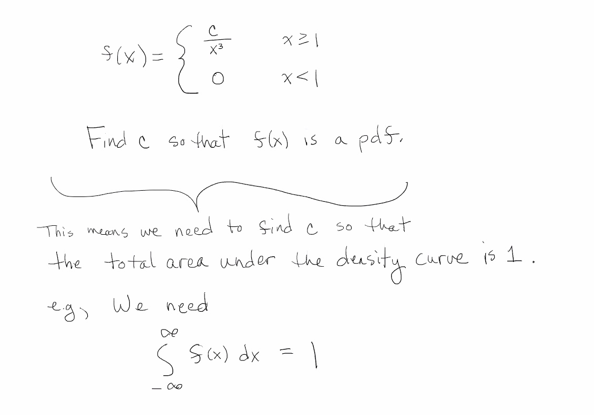
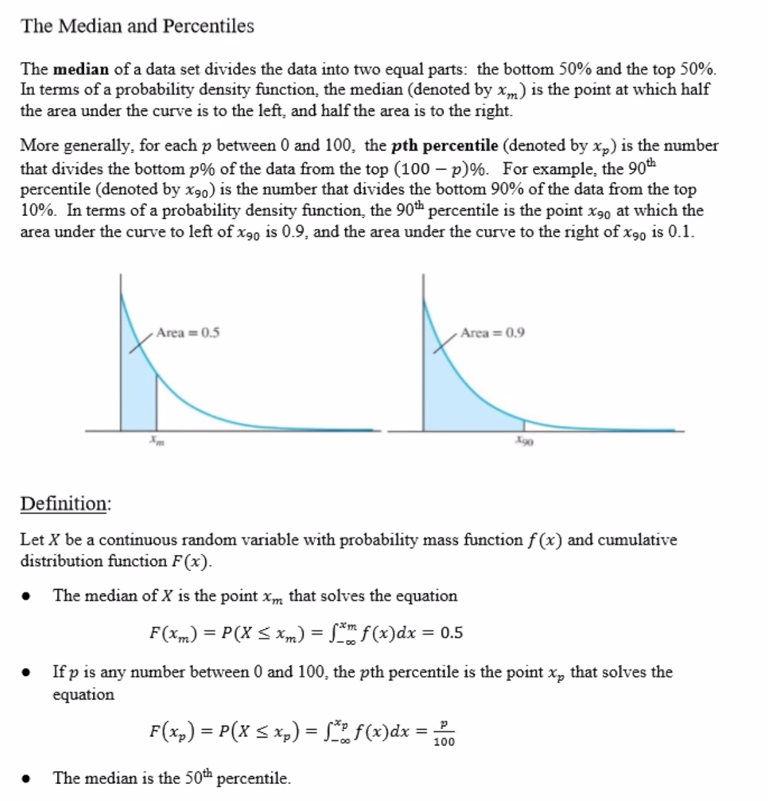
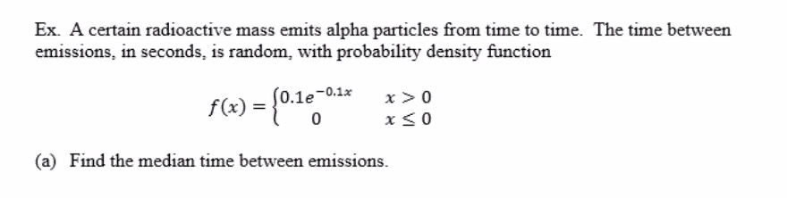
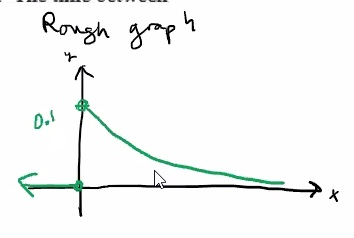
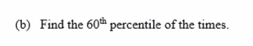

Warm up

We need to find c.
∫∞−∞f(x)dx=∫∞1cx3dx=limt→∞∫t1cx3dx=limt→∞c[1−2x−2]t1=limt→∞c[−12x2]t1=limt→∞c[−12t2+12]=c2
So:
c2c=1=2
∫e4xdx=14e4x+c
In general:
∫ekxdx=1kekx
Median and percentiles
Stat50 2.4 Median and Percentiles.pdf

e.g.


We are looking for xm such that F(xm)=0.5.
F(xm)=P(X≤xm)=∫xm−∞f(x)dx=∫xm00.1e−0.1xdx=0.1∫xm0e−0.1xdx=0.1[1−0.1e−0.1x]xm0=−e−0.1x∣xm0=−e−0.1xm−(−e0)=−e−0.1xm+1
Set it equal to our 0.5 because we are looking for the median:
−e−0.1xm+1e−0.1xmln(e−0.1xm)−0.1xmxmxm=0.5=0.5=ln(0.5)=ln(0.5)=ln(0.5)−0.1≈6.931seconds
Interpretation: half of the times between emissions are less than 6.931 seconds and half are more.

To find the 60 percentile we can set it equal to 0.6:
F(x60)=−e−0.1x60+1−e−0.1x60e−0.1x60−0.1x60x60x60=0.6=−0.4=0.4=ln(0.4)=ln(0.4)−0.1≈9.163seconds
Interpretation: 60% of the times between emissions are less than 9.163 seconds and 40% are greater.